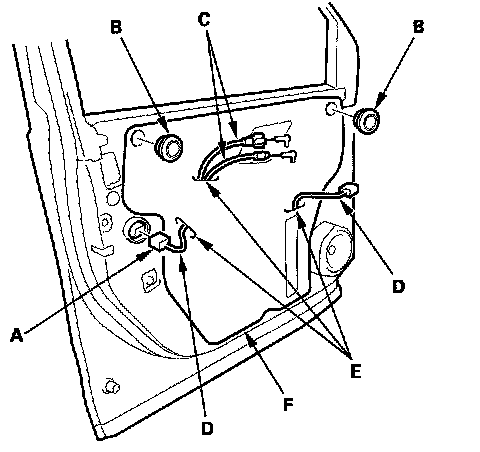
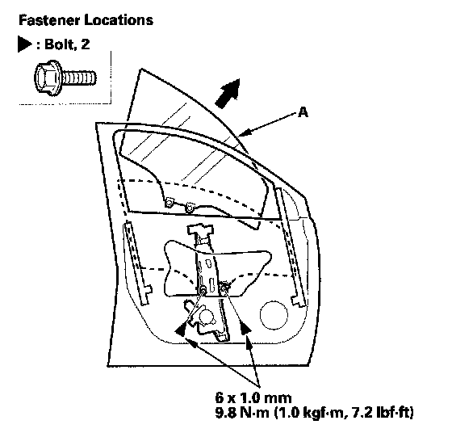
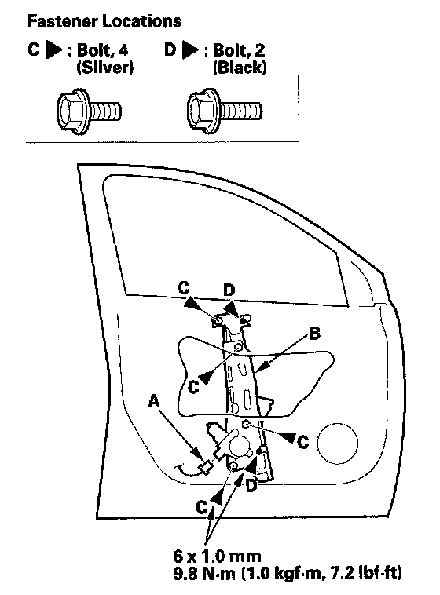
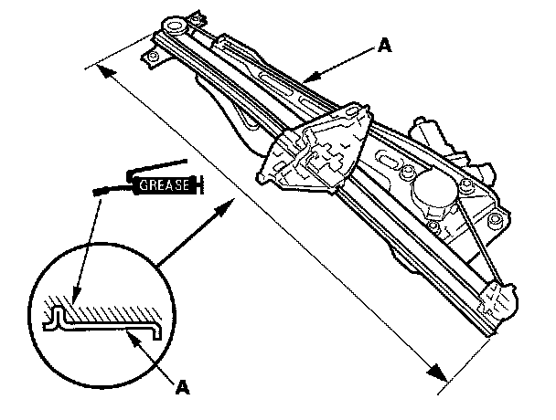

Front Door Window Glass: Service and Repair
Front Door Glass and Regulator ReplacementNOTE: Put on gloves to protect your hands.
1. Remove the door panel.

2. Disconnect the power door lock actuator connector (A), and remove the plug caps (B).
3. Pass the cables (C) and the harnesses (D) through the slits (E) in the plastic cover (F), then remove the plastic cover.
NOTE: Remove the glue from the door surface. If the plastic cover is damaged or torn, replace it.

4. Carefully raise the glass (A) until you can see the bolts, then remove them. Carefully pull the glass out through the window slot. Take care not to drop the glass inside the door.

5. Disconnect the connector (A) from the regulator (B).
6. Remove the bolts (C), and loosen the bolts (D), then remove the regulator through the hole in the door.

7. Apply multipurpose grease to all the sliding surfaces of the regulator (A) where shown.
8. Install the glass and regulator in the reverse order of removal, and note these items:
- Roll the glass up and down to see if it moves freely without binding.
- Make sure that there is no clearance between the glass and glass run channel when the glass is closed.
- Adjust the position of the glass as necessary.
- Do the power window control unit reset procedure.
- Check for water leaks.
- Test-drive and check for wind noise and rattles.
- When reinstalling the door panel, make sure the plastic cover is installed properly and sealed around its outside perimeter to seal out water.
- Make sure the power door locks, windows and power mirror operate properly.